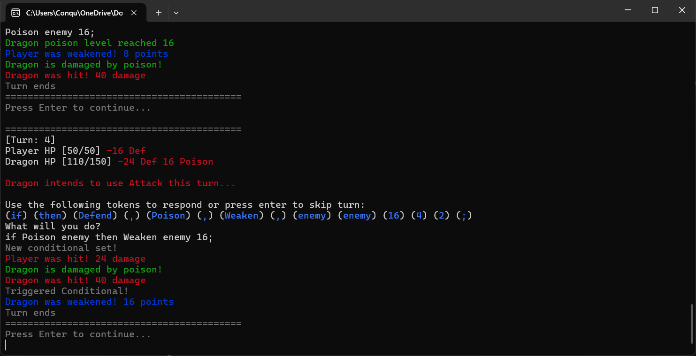

Fighting Words
2025Learned to program in Rust by creating a command-line turn-based survival game where the player learns to write sentences from a context-free-grammer.
- 
My name is Fabian Hernandez-Angel. I am a senior-year student at Seattle Pacific University studying Computer Science. I started learning to program in my last year of middle school with C# and Unity. A year later I started my first internship where I was introduced to VR game development and it's captivated my interest since.
Worked with Banging Rocks on projects like Domus Terrae, Space Shanties, and Museaum; developing accessibility features and optimizations for VR.
Interned as a student developer, scripted gameplay mechanics and assisted with debugging for a 2D fighting game project being worked on by the team.
Started as a student intern to learn how to develop games with immersive technologies. Later returned as a teaching assistant to help guide new students in game development projects.
Learned to program in Rust by creating a command-line turn-based survival game where the player learns to write sentences from a context-free-grammer.
Part of my study plan for taking the MongoDB Certified Developer Associate exam was to write a A note-taking application that allows users to create, read, update, and delete notes stored in a MongoDB database.
Designed a social application to encourage meaningful discussion through structured group chats and interest matching. The process of designing this app helped me better understand how to plan out user flows and create wireframes for app development.
I wanted to learn to use another game engine besides Unity, so over the winter I participated in a game jam to create a survival crafting game where players must craft a series of items in under 20-seconds while evading attacks from a monster.
An entry to the NASA Space Apps Challenge 2022. It was a 3D educational game where players collect samples of moon ragolith and take it back to a greenhouse to grow plants on the moon. This project helped me practice working with team members who weren't familiar with software development and attempting to replicate realistic physics in a game environment.
My first experience working with a larger team of software developers. A 2D fighting game made in Unity as part of my internship at Foundry10. Worked with a team of developers and artists to implement gameplay mechanics, debug issues, and polish the game for public presentation.
My first experience working remotely for a software development internship. Striker was a VR survival pong game where the player must swing a racket to launch the pong ball towards a horde of enemies approaching them. Through this project I learned how to effectively communicate with a remote team while developing my skills in C# and Unity.
My first VR game made in Unity during my time at Arts Corps. Explore a lowpoly world filled with strange creatures and hidden secrets. Through this project I learned the basics of optimizing for the Oculus Go and presenting a game project to industry professionals.